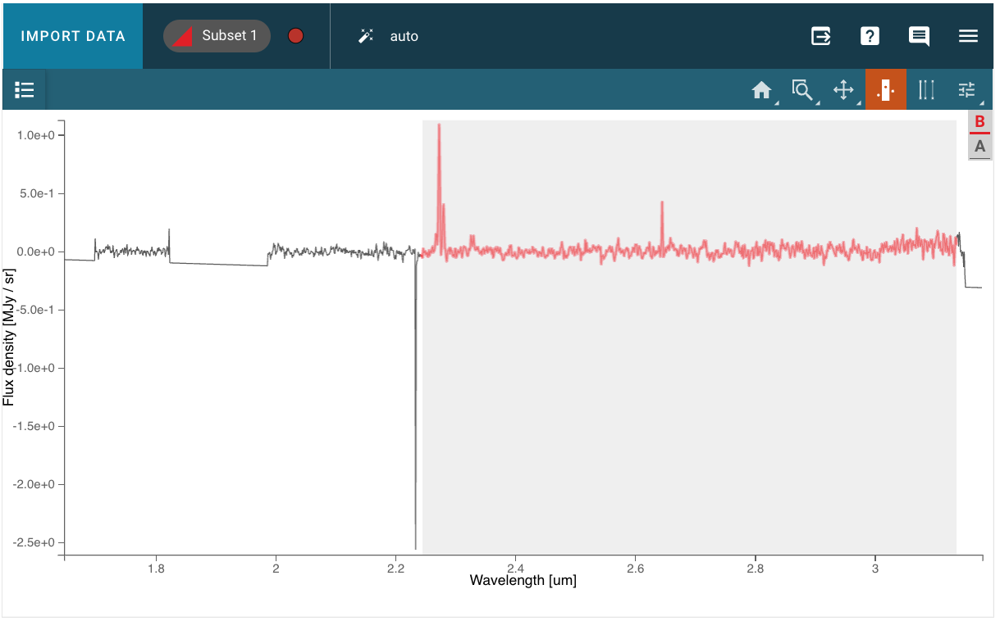

红移和模板拟合#
这个笔记本涵盖了用户如何使用可视化工具 Jdaviz 或通过编程方式使用 Specutils 来测量源的红移的基本示例。
用例：使用两种不同的方法从星系的光谱中测量红移。
数据：来自程序 2736 的 JWST/NIRSpec 光谱。
工具：jdaviz, specutils。
跨仪器：NIRISS, NIRCam。
内容
作者：Camilla Pacifici (cpacifici@stsci.edu)
更新：2024年11月18日
资源和文档#
此笔记本使用了来自 Specutils 和 Jdaviz 的功能。位于空间望远镜科学研究所的开发人员可以通过 JWST 帮助中心 回答问题和解决问题。如果您希望提供反馈或报告问题，您也可以直接在 Github 上提交问题，分别针对 Specutils 和 Jdaviz。
安装#
此笔记本提取自 JWebbinar 材料。
要运行此笔记本，您需要创建一个包含 jdaviz 包的环境，按照以下说明进行操作。
conda create -n jdaviz python=3.11
conda activate jdaviz
从最新版本安装
pip install jdaviz
或从 git 安装
pip install git+https://github.com/spacetelescope/jdaviz.git
导入 (Imports)#
# general os
import tempfile # 导入临时文件模块
# numpy
import numpy as np # 导入numpy库，用于数值计算
# astroquery
from astroquery.mast import Observations # 从astroquery库导入Observations模块，用于查询数据
# specviz
import jdaviz # 导入jdaviz库，以便后续获取版本号
from jdaviz import Specviz # 从jdaviz库导入Specviz类，用于光谱可视化
# astropy
import astropy # 导入astropy库，以便后续获取版本号
import astropy.units as u # 导入astropy单位模块
from astropy.io import ascii, fits # 从astropy.io导入ascii和fits模块，用于文件读写
from astropy.utils.data import download_file # 从astropy.utils.data导入下载文件的函数
from astropy.modeling.models import Linear1D # 从astropy建模模块导入线性模型
from astropy.nddata import StdDevUncertainty # 从astropy.nddata导入标准偏差不确定性类
# specutils
import specutils # 导入specutils库，以便后续获取版本号
from specutils import Spectrum1D, SpectralRegion # 从specutils导入一维光谱和光谱区域类
from specutils.fitting import fit_generic_continuum # 从specutils导入通用连续谱拟合函数
from specutils.analysis import correlation # 从specutils导入相关性分析模块
from specutils.manipulation import extract_region # 从specutils导入提取区域的函数
# glue
from glue.core.roi import XRangeROI # 从glue库导入X范围感兴趣区域类
# matplotlib
from matplotlib import pyplot as plt # 从matplotlib导入pyplot模块，用于绘图
# display
from IPython.display import display, HTML # 从IPython.display导入显示和HTML模块
# 自定义matplotlib样式
plt.rcParams["figure.figsize"] = (10, 5) # 设置默认图形大小为10x5英寸
params = {
'legend.fontsize': '18', # 设置图例字体大小为18
'axes.labelsize': '18', # 设置坐标轴标签字体大小为18
'axes.titlesize': '18', # 设置坐标轴标题字体大小为18
'xtick.labelsize': '18', # 设置x轴刻度标签字体大小为18
'ytick.labelsize': '18', # 设置y轴刻度标签字体大小为18
'lines.linewidth': 2, # 设置线条宽度为2
'axes.linewidth': 2, # 设置坐标轴线宽度为2
'animation.html': 'html5', # 设置动画输出格式为html5
'figure.figsize': (8, 6) # 设置默认图形大小为8x6英寸
}
plt.rcParams.update(params) # 更新matplotlib的参数设置
plt.rcParams.update({'figure.max_open_warning': 0}) # 关闭最大打开图形警告
# 确保我们的笔记本使用浏览器的全宽
display(HTML("<style>.container { width:100% !important; }</style>")) # 设置容器宽度为100%
版本：#
# 打印jdaviz库的版本
print("jdaviz:", jdaviz.__version__)
# 打印astropy库的版本
print("astropy:", astropy.__version__)
# 打印specutils库的版本
print("specutils:", specutils.__version__)
获取示例数据#
在这里，我们下载来自早期发布观测数据程序2736的光谱，以及我们将用作红移测量模板的模型光谱。该模板基于包括发射线的简单恒星群体模型的组合，如在Pacifici et al. (2012)中所做的。
# 选择计算机上的特定目录或临时目录
data_dir = tempfile.gettempdir() # 获取临时目录路径
# 从MAST获取文件
fn = "jw02736-o007_s000009239_nirspec_f170lp-g235m_x1d.fits" # 定义要下载的文件名
# 下载指定的JWST文件到本地路径
result = Observations.download_file(f"mast:JWST/product/{fn}", local_path=f'{data_dir}/{fn}') # 下载文件并保存到临时目录
# 下载模板文件并启用缓存
fn_template = download_file('https://stsci.box.com/shared/static/3rkurzwl0l79j70ddemxafhpln7ljle7.dat', cache=True) # 下载模板文件
Jdaviz 默认会读取表面亮度扩展（以 MJy/sr 为单位），但我更喜欢读取通量扩展（以 Jy 为单位）。我自己创建一个 Spectrum1D 对象来读取文件。
hdu = fits.open(f'{data_dir}/{fn}') # 打开指定路径下的FITS文件
wave = hdu[1].data['WAVELENGTH'] * u.Unit(hdu[1].header['TUNIT1']) # 获取波长数据并应用单位
flux = hdu[1].data['FLUX'] * u.Unit(hdu[1].header['TUNIT2']) # 获取光谱通量数据并应用单位
# std = hdu[1].data['FLUX_ERROR'] * u.Unit(hdu[1].header['TUNIT3']) # 这些值均为nan，定义一个人工的不确定性
fluxobs = Spectrum1D(spectral_axis=wave, # 创建一个Spectrum1D对象，指定光谱轴
flux=flux, # 指定光谱通量
uncertainty=StdDevUncertainty(0.1*flux)) # 使用0.1倍的通量作为不确定性
fluxobs # 输出光谱对象
使用Specviz进行“肉眼”红移测量#
Specviz将允许您将谱线波长与您在光谱中看到的发射线进行匹配。您将能够使用红移滑块在线列表插件中进行此操作。但首先，让我们在Specviz中打开光谱。
# 调用应用程序
viz = Specviz() # 创建Specviz实例
viz.show() # 显示应用程序界面
# 加载光谱
# viz.load_data(f'{data_dir}/{fn}', data_label="NIRSpec") # 从文件直接加载表面亮度
viz.load_data(fluxobs, data_label='NIRSpec') # 加载观测到的光谱数据，标签为'NIRSpec'
现在我们需要：
打开 “线列表” 插件

选择预加载的谱线或添加自定义谱线（谱线不会在查看器中显示，因为它们是在静止框架下绘制的）
提示：选择 Ha 及其周围的 NII 线
{kind=link}
{kind=link}
输入一个猜测的红移
{kind=link}
移动滑块以获得更好的匹配

使用 缩放工具 以获得更好的匹配
{kind=link}
使用交叉相关方法测量红移#
在天文学中，使用交叉相关算法测量红移是非常常见的。IRAF在其 xcsao 任务中使用了这种方法。在这里，我们使用Specutils的 模板交叉相关 函数来推导我们源的红移。在运行相关算法之前，我们需要做几件事：
获取用于相关的模板光谱
从模板和观测光谱中减去连续谱
确保光谱在波长上有一定的重叠
获取模板并准备使用#
该模板用于交叉相关，因此可以为了方便进行重新归一化。单位必须与观测光谱的单位相匹配。我们可以在 erg/(s cm² Å) 中进行连续体减法，因为连续体接近线性，然后通过 Jdaviz 运行以获得适当的转换。
# 定义单位
spec_unit = u.erg / u.s / u.cm**2 / u.AA # 每秒每平方厘米每埃的能量单位
# 使用ascii函数读取光谱
template = ascii.read(fn_template) # 从指定的文件中读取光谱数据
# 创建Spectrum1D对象
template = Spectrum1D(spectral_axis=template['col1']/1E4*u.um, # 将波长列转换为微米并创建光谱轴
flux=(template['col2']/1E24)*spec_unit) # 将flux列转换为适当的单位并创建光谱数据
# 截取有用范围 - 模板和观测数据必须重叠，因此我们选择2.4微米作为上限。
# 创建一个布尔数组，选择光谱轴在0.45到2.4微米之间的范围
use_tmp = (template.spectral_axis.value > 0.45) & (template.spectral_axis.value < 2.4)
# 使用布尔数组截取模板的光谱轴和通量，生成新的Spectrum1D对象
template_cut = Spectrum1D(spectral_axis=template.spectral_axis[use_tmp], flux=template.flux[use_tmp])
# 查看光谱
plt.figure(figsize=[10, 6]) # 创建一个10x6英寸的图形
plt.plot(template_cut.spectral_axis, template_cut.flux) # 绘制光谱轴与通量的关系
plt.xlabel("wavelength ({:latex})".format(template_cut.spectral_axis.unit)) # 设置x轴标签为波长，并显示单位
plt.ylabel("flux ({:latex})".format(template_cut.flux.unit)) # 设置y轴标签为通量，并显示单位
plt.title("Template") # 设置图形标题为“模板”
plt.show() # 显示图形
该图显示了模板光谱（通量 vs 波长）延伸至2.4微米，以便与观测光谱有一些波长重叠。
# 减去连续背景
# 创建一个掩膜，选择波长在0.70到2.40之间的部分
mask_temp = ((template_cut.spectral_axis.value > 0.70) & (template_cut.spectral_axis.value < 2.40))
# 使用掩膜创建一个新的光谱对象，仅包含选定的波长范围
template_forcont = Spectrum1D(spectral_axis=template_cut.spectral_axis[mask_temp], flux=template_cut.flux[mask_temp])
# 使用fit_generic_continuum函数拟合连续背景
fit_temp = fit_generic_continuum(template_forcont, model=Linear1D())
# 计算拟合的连续背景
cont_temp = fit_temp(template_cut.spectral_axis)
# 从原始光谱中减去拟合的连续背景
template_sub = template_cut - cont_temp
# 创建一个新的图形，设置大小
plt.figure(figsize=[10, 6])
# 绘制原始光谱
plt.plot(template_cut.spectral_axis, template_cut.flux)
# 绘制拟合的连续背景
plt.plot(template_cut.spectral_axis, cont_temp)
# 设置x轴标签，显示波长单位
plt.xlabel("wavelength ({:latex})".format(template_sub.spectral_axis.unit))
# 设置y轴标签，显示通量单位
plt.ylabel("flux ({:latex})".format(template_sub.flux.unit))
# 设置图形标题
plt.title("Plot template and continuum")
# 显示图形
plt.show()
该图显示了模板光谱（template spectrum）和最佳拟合连续谱（best-fitting continuum）。
# 打印 Spectrum1D 对象
print(template_sub) # 输出 template_sub 对象的内容
# 查看光谱
plt.figure(figsize=[10, 6]) # 创建一个10x6英寸的图形
plt.plot(template_sub.spectral_axis, template_sub.flux) # 绘制光谱轴与通量的关系图
plt.xlabel("wavelength ({:latex})".format(template_sub.spectral_axis.unit)) # 设置x轴标签为波长，并显示单位
plt.ylabel("flux ({:latex})".format(template_sub.flux.unit)) # 设置y轴标签为通量，并显示单位
plt.title("Continuum subtracted template") # 设置图形标题为“去除连续谱的模板”
plt.show() # 显示图形
该图显示了在减去拟合的连续谱（continuum）后得到的模板光谱（template spectrum）（通量 vs 波长）。
从观测光谱中减去连续谱#
我们可以使用不同的方法，通过 SpectralRegion 来实现这一点。如果观测光谱中未包含不确定性，我们还需要将其包含在内。
# 定义光谱区域
region = SpectralRegion(2.0*u.um, 3.0*u.um) # 创建一个光谱区域，从2.0微米到3.0微米
# 提取该区域的光谱数据
spec1d_cont = extract_region(fluxobs, region) # 从观测数据中提取指定光谱区域
# 运行拟合函数
fit_obs = fit_generic_continuum(spec1d_cont, model=Linear1D(5)) # 使用线性模型拟合提取的光谱数据
# 将拟合结果应用于光谱轴
cont_obs = fit_obs(fluxobs.spectral_axis) # 计算拟合的连续谱并应用于原始光谱轴
# 从观测光谱中减去连续谱
spec1d_sub = fluxobs - cont_obs # 得到减去连续谱后的光谱数据
# 查看光谱
plt.figure(figsize=[10, 6]) # 创建一个10x6英寸的图形
plt.plot(spec1d_sub.spectral_axis, spec1d_sub.flux) # 绘制光谱轴与通量的关系图
plt.xlabel("wavelength ({:latex})".format(spec1d_sub.spectral_axis.unit)) # 设置x轴标签为波长，单位为latex格式
plt.ylabel("flux ({:latex})".format(spec1d_sub.flux.unit)) # 设置y轴标签为通量，单位为latex格式
plt.title("Continuum subtracted observed spectrum") # 设置图表标题为“去除连续谱的观测光谱”
plt.show() # 显示图形
该图显示了在减去拟合的连续谱后观察到的光谱（通量 vs 波长）。
清理光谱#
最好去除可能看起来像发射/吸收线的伪影，并去除大的间隙。可以使用图形用户界面（GUI）选择光谱的干净部分。如果没有手动执行此操作，以下单元将以编程方式处理它。
{kind=link}
viz2 = Specviz() # 创建一个Specviz对象，用于可视化光谱数据
viz2.load_data(spec1d_sub, data_label='spectrum continuum subtracted') # 加载经过连续谱减去处理的光谱数据，并为其指定标签
viz2.show() # 显示光谱数据
# 如果尚未手动创建感兴趣区域，则创建一个子集
try:
# 获取经过连续性减法处理的光谱数据子集
region1 = viz2.get_spectra(data_label='spectrum continuum subtracted', subset_to_apply='Subset 1')
# 打印获取的光谱数据子集
print(region1)
# 标记子集存在
region1_exists = True
except Exception:
# 如果没有选择任何子集，则打印提示信息
print("There are no subsets selected.")
# 标记子集不存在
region1_exists = False
# 如果子集不存在，则为掩蔽伪影设置光谱区域
if region1_exists is False:
# 获取光谱查看器
sv = viz2.app.get_viewer('spectrum-viewer')
# 清空当前活动子集的选择
sv.toolbar_active_subset.selected = []
# 应用感兴趣区域（ROI），设置X轴范围
sv.apply_roi(XRangeROI(2.24, 3.13))
# 获取带掩膜的光谱
spec1d_region = viz2.get_spectral_regions() # 从可视化工具获取光谱区域
spec1d_masked = extract_region(spec1d_sub, spec1d_region['Subset 1'], return_single_spectrum=True) # 提取指定区域的光谱，并返回单一光谱
我们在Specviz的新实例中可视化观察到的和模板的连续谱减去背景的光谱。点击主页按钮以查看整个波长范围。模板光谱的单位将会更改，以匹配观察到的光谱。
viz3 = Specviz() # 创建一个Specviz对象，用于可视化光谱数据
viz3.load_data(spec1d_masked, data_label='observation') # 加载观测数据，使用标签'observation'
viz3.load_data(template_sub, data_label='template') # 加载模板数据，使用标签'template'
viz3.show() # 显示可视化界面
# 从viz3获取名为'template'的数据，并使用显示单位
template_newunit = viz3.get_data('template', use_display_units=True)
# 输出获取的数据
template_newunit
运行交叉相关函数 (Run the cross correlation function)#
# 调用函数进行模板相关性计算
corr, lag = correlation.template_correlate(spec1d_masked, template_newunit, lag_units=u.one)
# 绘制相关性图
plt.plot(lag, corr) # 绘制横坐标为lag，纵坐标为corr的曲线
plt.xlabel("Redshift") # 设置横坐标标签为“红移”
plt.ylabel("Correlation") # 设置纵坐标标签为“相关性”
plt.show() # 显示绘制的图形
该图显示了相关值与红移（redshift）的关系。尖峰（在红移约为2.5处）表示观察到的光谱与模板光谱最佳相关的值。
# 基于最大值计算红移
index_peak = np.argmax(corr) # 找到相关数组中最大值的索引
z = lag[index_peak] # 根据最大值的索引获取对应的红移值
print("Redshift from peak maximum: ", z) # 输出基于峰值最大值计算的红移
# 红移模板_sub
template_sub_z = Spectrum1D(spectral_axis=template_sub.spectral_axis * (1. + z), # 将光谱轴乘以(1 + z)以考虑红移
flux=template_sub.flux) # 保持原始的光通量不变
# 可视化红移模板和观测光谱
viz4 = Specviz() # 创建Specviz实例
viz4.load_data(spec1d_masked, data_label='Observed spectrum') # 加载观测光谱数据并标记为“Observed spectrum”
viz4.load_data(template_sub_z, data_label='Redshifted best template') # 加载红移最佳模板数据并标记为“Redshifted best template”
viz4.show() # 显示可视化结果